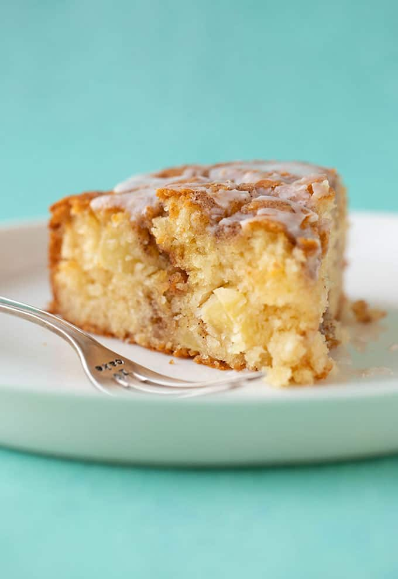

Perfect apple cake recipe

Description:
A deliciously easy Cinnamon Apple Cake made from scratch. This soft and tender Apple Cake is packed with fresh apples and features a crunchy cinnamon topping and a drizzle of sweet frosting
You are going to need:
- 210 grams (1 and 1/2 cups) plain flour or all purpose flour
- 2 teaspoons baking soda
- 1/2 teaspoon baking soda
- 150 grams caster sugar
- 1 cup peeled and chopped apples
- 2 large egss
- 1 teaspoon vanilla extract
- 120 ml vegetable oil
- 120 ml Greek yogurt
Step by step guide:
- Preheat oven to 180 C (350 F) standard / 160 C (320 F) fan-forced. Grease and line an 8-inch round cake pan with baking or parchment paper.
- In a large mixing bowl, add flour, baking powder, baking soda, salt and sugar. Add chopped apple and stir briefly to combine.
- In a separate bowl, add eggs, vanilla, oil and yoghurt. Whisk briefly just to break up the egg yolks.
- Add wet ingredients to dry ingredients and gently mix with a wooden spoon until combined – but be careful not to over mix. Spoon batter into prepared tin.
- To make cinnamon topping, combine cinnamon, sugar and butter. Mix together until lumpy and wet. Sprinkle over cake batter.
- Bake cake for approximately 30-35 minutes or until a skewer inserted into the middle comes out clean. Transfer cake to a wire rack to cool completely.